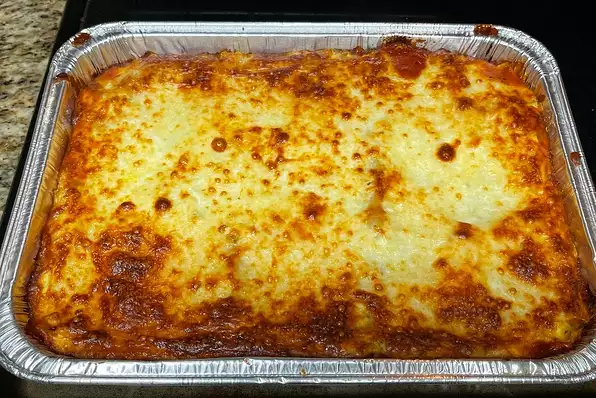

Lasagna

Description
This is the "World's Best Lasagna" recipe that involves cheese, sausage, and tons of other ingredients. Taken
straight from
Rome, this recipe will sure to be a family favorite for your next dinner
Ingredients
- 1 (16 ounce) package lasagna noodles
- 1 pound lean ground beef
- salt and pepper to taste
- 1 (16 ounce) jar spaghetti sauce
- 1 clove garlic, minced
- 1/2 pound shredded mozzarella cheese
- 1/2 pound shredded Cheddar cheese
- 1 pint ricotta cheese
Directions
- Step 1: Bring a large pot of lightly salted water to a boil. Add pasta and cook for 8 to 10 minutes or until
al dente; drain
- Step 2: Preheat oven to 350 degrees F. In a large skillet over medium-high heat, brown beef and asean with
salt and pepper; drain
Stir in spaghetti sauce and garlic and simmer 5 minutes.
- Step 3: In a medium bowl, combine mozzerella, Cheddar, and ricotta; stir well. In 9x13 inch pan, alternate
layers of noodles, meat mixture, and cheese mixture until pan is filled
- Step 4: Bake in preheated oven for 30 minutes, or until cheese is melted and bubbly.